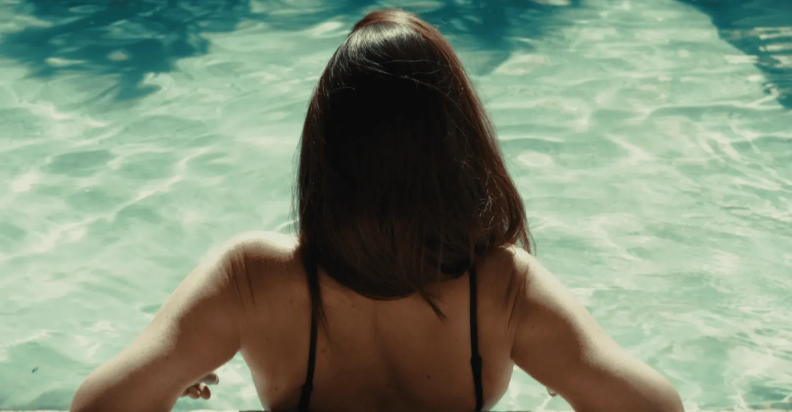

La Maizon - Maison d'hôtes de Provence
Équipe Technique
À propos du projet
La Maizon est une maison d'hôtes provençale installée à quelques minutes du Mont Ventoux. On leur a proposé deux versions : une version principale avec deux comédiens de la région, pour que le spectateur se projette immédiatement dans le lieu, et une version sans personnes pour mettre en valeur les espaces dans toute leur clarté. Tournage en une journée et demie avec une équipe de deux techniciens et du matériel léger. L'étalonnage joue sur des tons naturels et chauds, pensés pour être percutants dès la première image. Ce film promotionnel s'ouvre sur un plan panoramique depuis le Mont Ventoux en arrivant vers la maison.
Une maison d'hôtes provençale au pied du Mont Ventoux
La Maizon est une maison d'hôtes provençale située à quelques minutes du Mont Ventoux. La cliente avait besoin d'un outil vidéo pour mettre en valeur le lieu et convaincre les voyageurs de choisir cette adresse plutôt qu'une autre. Sur un marché où les maisons d'hôtes se ressemblent souvent dans leur communication, la vidéo devait faire ressentir quelque chose d'immédiat, de concret, avant même que le visiteur ne lise une ligne de description.
On a proposé deux versions : une version principale avec des comédiens de la région, pour que le spectateur se projette dans le lieu et s'imagine déjà là-bas, et une version sans personnes, plus architecturale, pour montrer les espaces dans leur clarté. Deux outils complémentaires, tournés en une journée et demie.
Montrer un lieu de vie sans en faire une brochure touristique
Le piège du film promotionnel pour une maison d'hôtes en Provence, c'est de tomber dans le catalogue : lavande, pierres en gros plan, coucher de soleil systématique. Ces images existent partout et finissent par ne plus rien dire. Le défi était de filmer La Maizon de façon à ce qu'elle soit reconnaissable et désirable, sans que le film ne ressemble à dix autres films du même type.
L'atout du lieu, c'est sa proximité avec le Mont Ventoux, un repère visuel fort qui ancre immédiatement la maison dans un territoire. Le film devait l'intégrer non pas comme un fond de décor, mais comme un élément narratif : on arrive vers la maison depuis le Mont Ventoux, on comprend où on est avant même d'en franchir la porte.
Des comédiens laissés libres, un étalonnage chaleureux dès la première image
Les deux comédiens choisis sont originaires de la région. L'enjeu n'était pas qu'ils jouent un rôle, c'était qu'ils se comportent naturellement dans le lieu : parler, rire, s'installer au bord de la piscine, prendre un verre. On ne voulait pas de performance, on voulait de la présence. Quand les gens à l'écran sont détendus, le spectateur l'est aussi, et c'est ce relâchement qui donne envie de réserver.
L'étalonnage a été pensé pour être impactant dès la première image : tons naturels et chauds, sans saturation excessive, une dominante qui rappelle la chaleur de la Provence sans être caricaturale. Le film commence fort visuellement pour capter l'attention avant que l'oeil n'ait le temps de dérocher.
Une journée et demie, deux techniciens, matériel léger
Le tournage s'est étalé sur une journée et demie. Deux techniciens, un setup léger pensé pour ne pas encombrer le lieu et ne pas rigidifier les comédiens. La première journée couvrait l'essentiel des plans avec les comédiens, intérieur et extérieur. La demi-journée suivante permettait de reprendre certains plans en lumière différente et de filmer les espaces à vide pour la deuxième version.
Le plan d'ouverture est un panoramique depuis le Mont Ventoux, en arrivant vers la maison depuis loin. C'est le plan qui situe, qui installe le territoire, qui dit au spectateur où il va mettre les pieds. Ce type de plan change tout à la première impression : en trois secondes, on comprend que La Maizon n'est pas juste une maison, c'est un endroit.
Deux films d'une minute, une cliente satisfaite
Deux livrables finaux : la version avec comédiens (la principale, pour le site, les réseaux et la communication directe) et la version vide (pour les supports plus techniques ou pour les acheteurs qui veulent voir les espaces sans interprétation). Chaque version dure une minute, format 16/9. La musique, le montage et l'étalonnage sont identiques sur les deux pour une cohérence de marque immédiate.
"Excellente expérience avec Human Rec. Sacha est complètement à l'écoute, réactif et super professionnel. Je recommande sans réserve."
Françoise, cliente La Maizon
Pour un film promotionnel de ce type, le tarif dépend du format, du tournage et de la post-production souhaitée. Contactez-nous pour un devis adapté à votre projet.
Un projet similaire en tête ? Vous avez un lieu, une marque ou un projet à mettre en image avec la même approche ? Parlons-en en 15 minutes.


Vous souhaitez un film similaire ?
Dites-nous ce que vous voulez construire. On vous dit comment on peut le faire.
Parlons-en